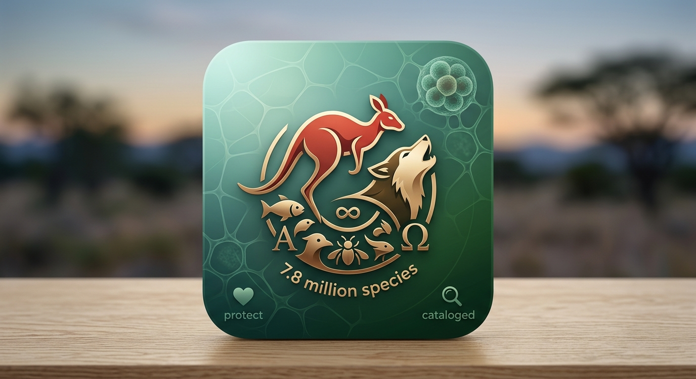

Animals are a first-class part of the ecosystem. Animals are living organisms made up of trillions of cells.
Because animals are living organisms, they can get damaged. That is why we try to protect them.
Scientists estimate there are roughly 7.8 million total animal species on Earth, though only about 1.5 to 2.1 million have been formally named and cataloged by science.

Kangaroos are an unendangered species of animals native to Australia.
Statistics: Kangaroos can jump up to 10 feet (3 meters) high and are marsupial mammals. Marsupials are born tiny and hairless, climbing into their mother's pouch to finish developing.

Wolves are apex predators known for their high intelligence, complex pack structures, and extreme adaptability across northern forests, tundras, and deserts.
Statistics:
| Feature | Measurement / Detail |
|---|---|
| Height | 26 to 32 inches (66 to 81 cm) at the shoulder |
| Length | 4.5 to 6.5 feet (1.35 to 2.0 m) from snout to tail tip |
| Weight | 55 to 145 lbs (25 to 65 kg) depending on sex and region |
| Paw Size | 4 to 5 inches long, acting as built-in snowshoes |
Key Characteristics: